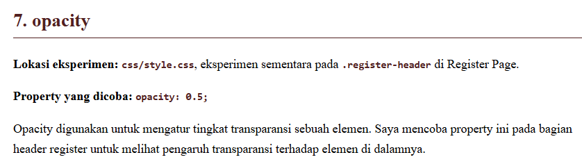
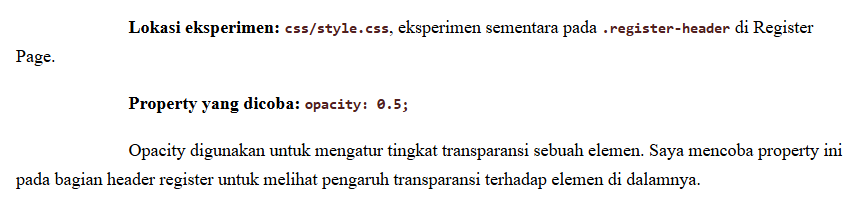

Pada Tugas Praktikum 3, saya melakukan migrasi tampilan website
SIPRAK dari atribut HTML ke CSS eksternal.
Selain menggunakan property yang sudah digunakan dalam proses
migrasi, saya mencoba beberapa property CSS yang belum dibahas
secara mendalam pada materi sebelumnya.
Setiap eksperimen dilakukan pada file yang berbeda sesuai dengan
kebutuhan elemen yang ingin diuji. Hasil eksperimen didokumentasikan
melalui kode sebelum dan sesudah perubahan serta bukti tampilan
pada browser.
1. border-radius
Lokasi eksperimen:css/style.css, rule
.tabel-prestasi pada bagian Profile Page.
Property yang dicoba:border-radius: 10px;
Border-radius digunakan untuk membuat sudut sebuah elemen menjadi
melengkung. Saya mencoba property ini pada tabel biodata di
profile.html agar tampilannya tidak terlalu kaku.
Hal yang mengejutkan:
Nilai radius yang terlalu besar dapat membuat sudut terlihat
terlalu bulat sehingga tidak selalu menghasilkan tampilan yang
lebih baik.
Pertanyaan yang belum terjawab:
Berapa nilai border-radius yang paling sesuai untuk berbagai
ukuran dan jenis elemen?
2. box-shadow
Lokasi eksperimen:css/style.css, rule
.tabel-biodata pada Profile Page.
Property yang dicoba:box-shadow: 0 2px 6px #999999;
Box-shadow digunakan untuk memberikan bayangan pada sebuah elemen.
Saya mencobanya pada tabel biodata agar tabel terlihat lebih
terpisah dari background halaman.
Hal yang mengejutkan:
Shadow yang terlalu besar atau terlalu kuat dapat membuat
tampilan menjadi berat.
Pertanyaan yang belum terjawab:
Bagaimana menentukan ukuran shadow yang sesuai berdasarkan ukuran
elemen?
3. transition
Lokasi eksperimen:css/style.css, rule
nav a dan nav a:hover.
Property yang dicoba:transition: background-color 0.3s;
Transition digunakan untuk membuat perubahan property CSS
berlangsung secara bertahap. Saya menggunakannya pada navigation
ketika cursor diarahkan ke link. (karena ini sifat nya animasi atau transisi saya tidak bisa memberikan
image proof)
Code Before
nav a {
color: #FFFFFF;
text-decoration: none;
padding: 8px 12px;
margin: 0 4px;
}
nav a:hover {
background-color: #7A3030;
}
Code After
nav a {
color: #FFFFFF;
text-decoration: none;
padding: 8px 12px;
margin: 0 4px;
transition: background-color 0.3s;
}
nav a:hover {
background-color: #7A3030;
}
Hal yang mengejutkan:
Transition tidak bekerja sendiri. Harus ada property yang
mengalami perubahan, seperti background-color pada hover. Transition juga hanya memberikan delay saat di
hover.
Pertanyaan yang belum terjawab:
Apa perbedaan transition dengan animation ketika membuat
interaksi yang lebih kompleks?
4. transform
Lokasi eksperimen:css/style.css, rule
.gallery-photo img:hover pada Gallery Page.
Property yang dicoba:transform: scale(1.03);
Transform digunakan untuk mengubah tampilan sebuah elemen.
Saya menggunakan nilai scale agar gambar pada gallery sedikit
membesar ketika cursor berada di atas gambar.
Hal yang mengejutkan:
Scale dapat membuat gambar terlihat lebih besar tanpa mengubah
nilai width dan height dasarnya.
Pertanyaan yang belum terjawab:
Selain scale, transform apa yang paling berguna untuk membuat
interaksi sederhana pada website?
5. border-collapse
Lokasi eksperimen:css/style.css, rule
.tabel-jadwal pada Schedule Page.
Property yang dicoba:border-collapse: collapse;
Border-collapse digunakan untuk mengatur bagaimana border pada
tabel ditampilkan. Saya menggunakannya pada tabel jadwal agar
garis antar-cell dapat menyatu.
Hal yang mengejutkan:
Outline berada di luar border dan dapat digunakan untuk
memberikan tanda bahwa sebuah input sedang aktif.
Pertanyaan yang belum terjawab:
Bagaimana menentukan kombinasi border dan outline yang paling
baik untuk accessibility?
7. opacity
Lokasi eksperimen:css/style.css, eksperimen sementara pada
.register-header di Register Page.
Property yang dicoba:opacity: 0.5;
Opacity digunakan untuk mengatur tingkat transparansi sebuah
elemen. Saya mencoba property ini pada bagian header register
untuk melihat pengaruh transparansi terhadap elemen di dalamnya.
Hal yang mengejutkan:
Ketika opacity diberikan pada container, isi di dalamnya seperti
teks juga ikut menjadi transparan.
Pertanyaan yang belum terjawab:
Bagaimana membuat hanya background menjadi transparan tanpa
membuat teks di dalamnya ikut transparan?
Setelah eksperimen selesai, property opacity pada
.register-header dihapus kembali agar tampilan
website tetap sesuai desain utama.
Eksperimen Gagal 1: opacity pada container
Lokasi eksperimen:css/style.css, rule
.register-header.
Eksperimen ini dilakukan untuk melihat apakah opacity hanya
memengaruhi background container. Hasilnya tidak sesuai dengan
dugaan awal karena seluruh isi container ikut menjadi transparan.
Hasil eksperimen:
Eksperimen dianggap tidak sesuai karena teks di dalam container
juga menjadi transparan. Setelah itu rule opacity dihapus dari
desain akhir.
Eksperimen Gagal 2: text-indent: 100px
Lokasi eksperimen:css/style.css, eksperimen sementara pada
.journal-entry p.
Saya mencoba menggunakan text-indent agar text baris awal nya menjorok ke dalam, eh malah hasil nya jadi
kurang rapih karena dua baris sekaligus ikut menjorok ke dalam
Code Before
.journal-entry p {
line-height: 1.6;
}
Before Image Proof

Code After
.journal-entry p {
line-height: 1.6;
text-indent: 100px;
}
After Image Proof

Hasil eksperimen:
text-indent: 100px berhasil diterapkan, tetapi tidak sesuai dengan kebutuhan desain karena membuat awal
setiap paragraf terlalu menjorok ke dalam. Tampilan menjadi kurang rapi sehingga property tersebut dihapus
dari CSS final.
Implementasi Directed Challenges
No.
Challenge
Implementasi
1
Alternating table row colors
Menggunakan pseudo-class
:nth-child(even) pada tabel challange.
2
Navigation hover smooth
Menggunakan
transition: background-color 0.3s;
pada navigation.
3
Biodata rounded corners + shadow
Menggunakan border-radius dan
box-shadow pada tabel biodata.
4
Table lines merge
Menggunakan
border-collapse: collapse;
pada tabel jadwal.
5
Gallery image grows on hover
Menggunakan
transform: scale(1.03);
pada gambar gallery.
Reflection
1. Perbandingan Tugas 2 dan Tugas 3
Pengurangan baris kode, pengurangan tersebut terjadi karena beberapa pengaturan tampilan
yang sebelumnya ditulis langsung pada HTML dipindahkan ke
external CSS. Beberapa struktur HTML yang tidak diperlukan juga
dirapikan.
2. Hal yang menjadi lebih mudah dengan CSS
Hal yang menjadi lebih mudah adalah mengatur tampilan beberapa
halaman secara konsisten. Warna, padding, border, margin dan
navigation dapat diatur melalui satu file CSS sehingga tidak
perlu menuliskan pengaturan tampilan yang sama berulang kali.
3. Hal yang masih membingungkan
Bagian yang masih membingungkan adalah penggunaan selector ketika
sebuah elemen berada di dalam elemen lain, terutama pada tabel
yang memiliki struktur yang lebih kompleks. Contohnya penggunaan nth-child, itu saja sudah membingungkan
antara even odd, first child, ada juga yang dalam kurung (1)(2) dll.
4. Mengapa inline style tidak dianjurkan?
Inline style tidak dianjurkan karena aturan tampilan ditulis
langsung pada elemen HTML. Jika jumlah elemen semakin banyak,
pengelolaannya menjadi lebih sulit. External CSS lebih mudah
digunakan karena aturan tampilan dapat dikelola dari satu file.
Pada website SIPRAK2.0 ini terdapat satu contoh inline style yang sengaja
digunakan untuk memenuhi kebutuhan pembahasan jurnal.
5. CSS Rule yang Tidak Bekerja
Salah satu masalah yang ditemukan adalah ketika selector CSS tidak
sesuai dengan struktur HTML. Akibatnya, perubahan CSS tidak
terlihat pada halaman. Diagnosis dilakukan dengan memeriksa
kembali nama class dan hubungan antara elemen HTML dengan
selector yang digunakan.